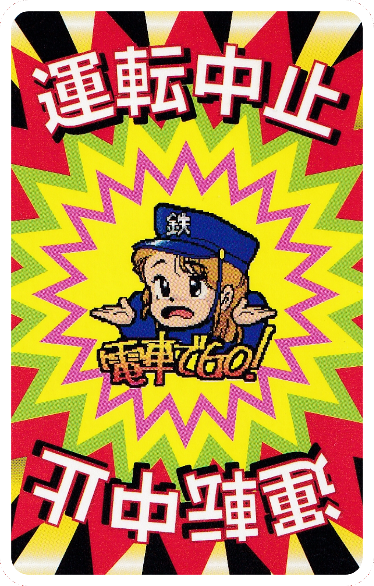

●「Line Shut Down Card」
When this card is played, the entire line is discarded. There is no corresponding guard card, so there's nothing that can be done.
※ The target will take their turn, skipping everyone else.
※ All cards for the affected line must be discarded.
San'in
Station 450
100
Tokaido
Station 800
500
200
Line Shut Down
Yamanote
Station 500
Station 800
500
200
Line Shut Down
Discard the station, all distance cards, and the Line Shut Down card.
It's no use! The Line Shut Down card is too powerful!